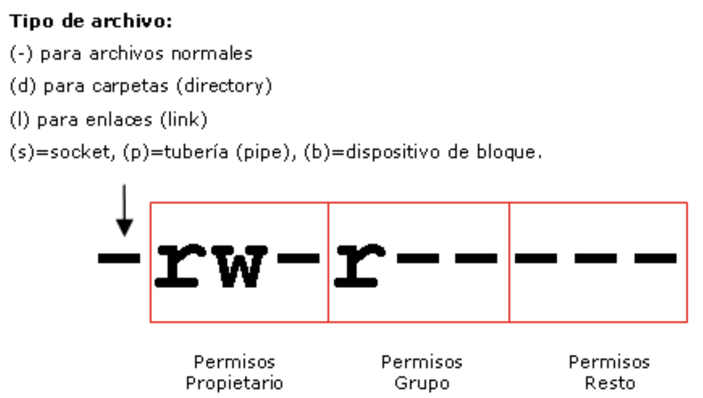
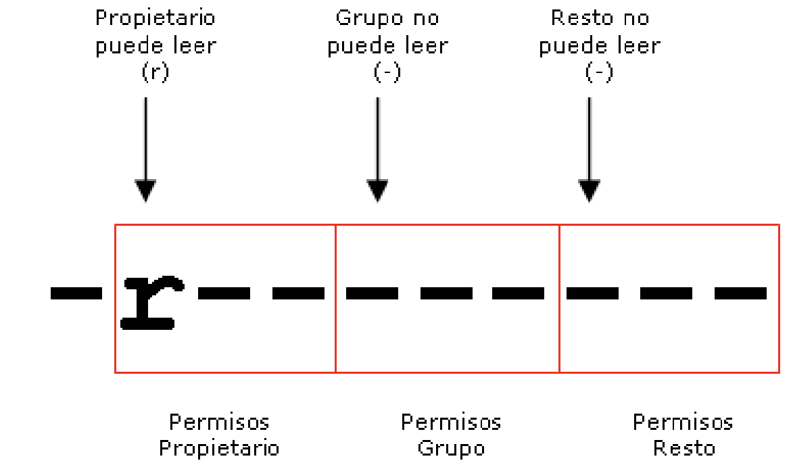
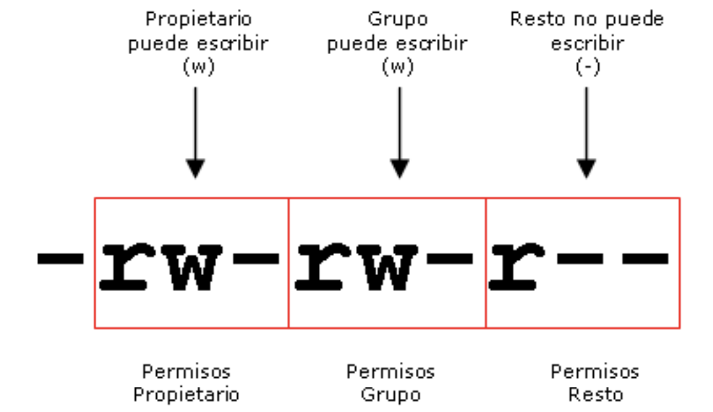
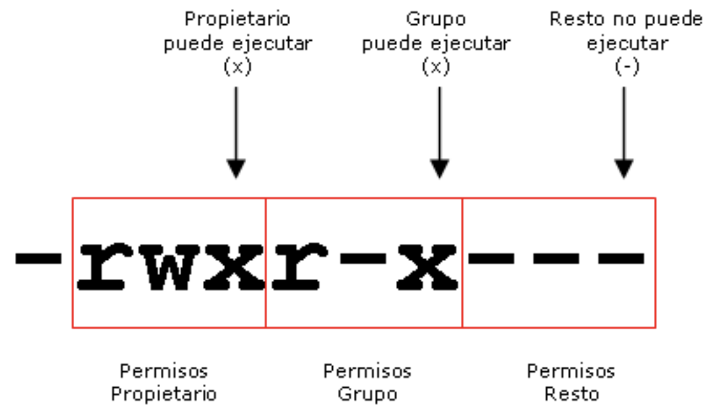

Unidad 3 - Administración de Lubuntu
Introducción
La administración de un sistema GNU/Linux (Lubuntu) es amplia y no se centraliza en una sola herramienta. En la práctica se combinan comandos en terminal con utilidades gráficas. Mientras que las GUIs varían entre distribuciones y entornos (en Lubuntu, Centro de configuración de LXQt y herramientas afines), los comandos suelen ser comunes. De hecho, muchas GUIs actúan como front-end de utilidades CLI mediante PolicyKit (pkexec) para elevar privilegios cuando es necesario.
Las tareas de administración requieren privilegios elevados. En Linux el superusuario es root, cuya sesión directa suele estar deshabilitada por defecto. En su lugar, la administración se realiza con sudo: cualquier usuario perteneciente al grupo sudo puede ejecutar acciones administrativas.
Cuando una aplicación gráfica necesita permisos, el sistema mostrará un cuadro de autenticación (polkit) para introducir la contraseña del usuario autorizado. En terminal, se antepone sudo al comando que requiera privilegios. Tras autenticarse, sudo mantiene un “ticket” temporal (por defecto, unos 15 minutos) y no vuelve a pedir la contraseña hasta que caduque; este tiempo es configurable en /etc/sudoers (editar siempre con visudo).
Ejemplo (listar particiones del sistema):
Usuario y grupos
Linux (y por extensión Lubuntu) es multiusuario: varias personas (o servicios) pueden iniciar sesión a la vez, localmente o por acceso remoto. Por eso, crear, mantener y auditar cuentas es una tarea habitual de administración. Además de personas, muchos servicios del sistema usan cuentas propias para acotar privilegios.
Bases de datos de usuarios y grupos
La información de cuentas y grupos se almacena en ficheros de texto gestionados por la libc (consultables también con getent):
- /etc/passwd: usuarios (nombre, UID, GID principal, comentario, home, shell).
- /etc/shadow: contraseñas cifradas y políticas (solo legible por root).
- /etc/group: grupos y sus miembros.
- /etc/gshadow: contraseñas/administración de grupos (solo root).
Tipos de cuentas
- root: superusuario (UID 0). Tiene control total del sistema. No se recomienda usarlo para trabajo diario; se opera con sudo desde cuentas normales.
- Cuentas del sistema: usadas por servicios y demonios (p. ej., daemon, lp, www-data, _apt, systemd-timesync, etc.). Suelen tener contraseña bloqueada y shell no interactiva (/usr/sbin/nologin), de modo que no están pensadas para iniciar sesión.
- Usuarios estándar: cuentas de personas que sí inician sesión y trabajan en el sistema.
Identificadores de usuario y de grupo (UID/GID)
Cada cuenta tiene un UID único y cada grupo un GID. En Debian/Ubuntu/Lubuntu se emplean por defecto estos rangos (configurables en /etc/login.defs):
- UID 0 → root.
- 1–999 → cuentas del sistema.
- ≥ 1000 → usuarios estándar (valor por defecto de UID_MIN = 1000).
- El usuario nobody suele tener UID 65534 y el grupo nogroup GID 65534 (mínimos privilegios).
Cuando creas un usuario nuevo, el sistema suele crear también su grupo privado con el mismo número (UID=GID), lo que facilita la gestión de permisos.
Archivo /etc/passwd
Contiene las cuentas de usuario registradas. Es un fichero de texto donde cada línea es un usuario y los campos están separados por dos puntos :.
Formato (7 campos):
- Login → nombre de la cuenta (único).
- Contraseña → normalmente x (la contraseña real está en /etc/shadow).
- UID → identificador numérico del usuario (único).
- GID → identificador del grupo principal del usuario.
- Comentario (GECOS) → suele incluir el nombre completo u otros datos.
- HOME → directorio personal.
- Shell → intérprete de comandos (p. ej., /bin/bash o /usr/sbin/nologin).
Gestión de usuarios
Crear usuarios: useradd
useradd añade una nueva cuenta al sistema. Requiere privilegios y, por seguridad, la cuenta recién creada queda sin contraseña (bloqueada para inicio de sesión) hasta que se le asigne una con passwd. En Debian/Ubuntu/Lubuntu suele recomendarse adduser (asistente interactivo). Aun así, useradd es la herramienta de bajo nivel estándar.
Sintaxis
Parámetros
- login Nombre (único) de la nueva cuenta.
Opciones habituales
- -c, --comment "texto" Comentario/GECOS (p. ej., nombre completo). Si hay espacios, entre comillas.
- -d, --home
Ruta del HOME. Si no existe y usas -m, se crea y se puebla desde /etc/skel. - -e, --expiredate
Fecha en la que la cuenta expira (queda deshabilitada). - -f, --inactive
Días de inactividad tras expirar la contraseña antes de desactivar la cuenta. - -g, --gid
- -G, --groups
- -m, --create-home Crea el directorio HOME si no existe (copiando plantillas de /etc/skel).
- -M No crear el HOME (incluso si la configuración lo permitiría).
- -s, --shell
Shell de inicio (p. ej., /bin/bash, /usr/sbin/nologin). - -u, --uid
UID explícito (único y no negativo). - -r, --system Crea una cuenta del sistema (UID en rango de sistema, sin login interactivo).
Ejemplos
# Alta básica con HOME y grupos suplementarios
sudo useradd -m -c "María López" -s /bin/bash -G sudo,lpadmin mlopez
sudo passwd mlopez # establecer contraseña (habilita login)
# Crear con HOME personalizado y caducidad de cuenta
sudo useradd -m -d /srv/apps/appuser -e 2026-12-31 -s /usr/sbin/nologin appuser
# Especificar grupo principal existente y UID concreto
sudo useradd -m -u 1501 -g docentes -G audio,video -s /bin/bash pserrano
sudo passwd pserrano
Modificar cuentas: usermod
usermod modifica propiedades de una cuenta existente (requiere privilegios). Úsalo para cambiar shell, grupos, HOME, caducidad, bloqueo, etc.
Sintaxis
Parámetros
- login Nombre actual de la cuenta a modificar.
Opciones habituales
- -c, --comment "texto" Cambia el campo GECOS (p. ej., nombre completo).
- -d, --home DIR Establece nuevo HOME.
- -m, --move-home Mueve el contenido del HOME actual a DIR (usar junto a -d).
- -e, --expiredate AAAA-MM-DD Fecha en que la cuenta expira (queda deshabilitada).
- -f, --inactive DÍAS Días de gracia tras caducar la contraseña antes de desactivar la cuenta.
- -g, --gid GRUPO|GID Cambia el grupo principal (debe existir).
- -G, --groups g1,g2,... Sustituye los grupos suplementarios por la lista indicada.
- -a, --append Añade a los grupos indicados en -G (sin reemplazar los existentes).
- -l, --login NUEVO Renombra el login (no renombra el HOME salvo que uses -d -m).
- -s, --shell /ruta/shell Cambia la shell de inicio (p. ej., /bin/bash, /usr/sbin/nologin).
- -u, --uid UID Cambia el UID (evita colisiones; revisa propiedad de archivos).
- -L, --lock Bloquea la contraseña (añade ! al hash en /etc/shadow).
- -U, --unlock Desbloquea la contraseña.
Ejemplos
# Añadir a grupos sin perder los actuales
sudo usermod -aG audio,video mlopez
# Cambiar shell
sudo usermod -s /bin/bash alumno1
# Cambiar grupo principal
sudo usermod -g docentes pserrano
# Mover HOME a nueva ruta
sudo usermod -d /srv/users/mlopez -m mlopez
# Caducar cuenta en una fecha
sudo usermod -e 2026-06-30 contratada
# Bloquear / desbloquear inicio por contraseña
sudo usermod -L temporal; sudo usermod -U temporal
# Renombrar login (y HOME a juego)
sudo usermod -l marta.lopez mlopez
sudo usermod -d /home/marta.lopez -m marta.lopez
Eliminar cuentas: userdel
userdel elimina una cuenta de usuario. Requiere privilegios. Por defecto no borra el directorio HOME ni otros archivos del usuario repartidos por el sistema.
Sintaxis
Parámetros
- login Nombre de la cuenta a eliminar.
Opciones
- -r, --remove Borra el HOME del usuario (si existe).
- -f, --force Fuerza el borrado aunque el usuario tenga sesión activa y elimina el HOME incluso si no es propiedad del usuario.
Ejemplos
# Borrado seguro (sin sesiones activas), conservando HOME
sudo userdel alumno1
# Borrar cuenta y su HOME
sudo userdel -r alumno1
# Si sigue con procesos abiertos, terminar y borrar
loginctl terminate-user alumno1 # o pkill -u alumno1
sudo userdel -r alumno1
Alta “amigable” y grupos: adduser y addgroup (Debian/Ubuntu/Lubuntu)
En Debian/Ubuntu, adduser y addgroup son front-ends más interactivos y seguros que useradd/groupadd. Preguntan los datos necesarios y crean HOME con las plantillas de /etc/skel (salvo que se indique lo contrario).
Modos de uso
- Crear usuario normal (interactivo): sudo adduser login
- Crear usuario de sistema (sin login interactivo, sin contraseña): sudo adduser --system [--no-create-home] [--home DIR] login
- Crear grupo: sudo addgroup grupo
- Crear grupo de sistema: sudo addgroup --system grupo
- Añadir usuario existente a grupo existente: sudo adduser login grupo
Sintaxis
Opciones habituales
- --home DIR Establece HOME (lo crea y copia /etc/skel, salvo --no-create-home).
- --no-create-home No crear HOME.
- --shell SHELL Shell de inicio (p. ej., /bin/bash).
- --ingroup GRUPO Grupo principal (en vez de crear uno privado).
- --gid GID GID del grupo creado / asignado.
- --uid UID UID específico para el usuario.
- --system Crear usuario/grupo de sistema.
Ejemplos
# Usuario normal con HOME, shell bash y grupo adicional 'lpadmin'
sudo adduser mlopez
sudo adduser mlopez lpadmin
# Usuario normal con grupo principal existente y HOME personalizado
sudo adduser --ingroup docentes --home /srv/users/mlopez --shell /bin/bash mlopez
# Usuario de sistema para servicio, sin HOME ni login
sudo adduser --system --no-create-home --shell /usr/sbin/nologin appsvc
sudo addgroup --system appsvc
sudo adduser appsvc appsvc # asegurarlo en su grupo
# Crear grupo y añadir varios usuarios
sudo addgroup proyectos
sudo adduser ana proyectos
sudo adduser juan proyectos
Administración de contraseñas
Cambiar y gestionar contraseñas: passwd
passwd permite cambiar la contraseña de un usuario y ajustar sus políticas de caducidad. Un usuario estándar solo puede cambiar su propia clave; root puede gestionar la de cualquier cuenta.
Al ejecutarlo, si cambias tu propia clave, pide la contraseña actual y luego solicita la nueva dos veces. Si las entradas coinciden y cumplen la política de PAM (longitud, complejidad, historial…), se actualiza en /etc/shadow.
Sintaxis
Parámetros
- login Usuario cuyo secreto se gestiona. Si se omite, actúa sobre la cuenta en curso.
Opciones principales
- -d, --delete Elimina la contraseña (deja la cuenta sin clave). Úsese con cautela.
- -e, --expire Expira ahora la contraseña para forzar el cambio en el próximo inicio de sesión.
- -i, --inactive DÍAS Días de gracia tras expirar la clave; después, la cuenta queda deshabilitada.
- -l, --lock Bloquea la contraseña (antepone ! al hash en /etc/shadow). Impide login por contraseña.
- -u, --unlock Desbloquea la contraseña (retira el bloqueo).
- -n, --mindays DÍAS Mínimo de días entre cambios.
- -x, --maxdays DÍAS Máximo de días que una contraseña puede permanecer sin cambiar.
- -w, --warndays DÍAS Días de aviso antes de la expiración.
- -S, --status Muestra el estado de la cuenta/clave de forma resumida.
Ejemplos
# Cambiar TU propia clave
passwd
# Forzar a un usuario a cambiar la contraseña en el próximo login
sudo passwd -e alumno1
# Bloquear y desbloquear contraseña de una cuenta
sudo passwd -l practicas
sudo passwd -u practicas
# Dejar una cuenta sin contraseña (solo en entornos controlados)
sudo passwd -d laboratorio
# Políticas de caducidad
sudo passwd -x 90 -w 7 -n 1 profesor1 # máx 90 días, aviso 7, mínimo 1 día
# Ver estado
sudo passwd -S profesor1
Gestión de grupos
Crear grupos: groupadd
groupadd crea un nuevo grupo en el sistema.
Sintaxis
Parámetros
- grupo Nombre del grupo a crear.
Opciones
- -g, --gid GID Establece el GID del grupo.
- -r, --system Crea un grupo del sistema.
Ejemplos
Modificar grupos: groupmod
groupmod modifica los atributos de un grupo existente.
Sintaxis
Parámetros
- grupo Nombre actual del grupo.
Opciones
- -g, --gid GID Cambia el GID.
- -n, --new-name nuevo_nombre Renombra el grupo.
Ejemplos
Eliminar grupos: groupdel
groupdel borra un grupo.
Sintaxis
Parámetros
- grupo Nombre del grupo a eliminar.
Ejemplos
Gestionar membresías/contraseñas: gpasswd
gpasswd administra grupos y sus contraseñas. Sin opciones, establece la contraseña del grupo (raro en estaciones de trabajo; se prefiere gestionar membresías).
Sintaxis
Parámetros
- grupo Grupo a gestionar.
Opciones
- -a, --add login Añade el usuario al grupo.
- -d, --delete login Quita el usuario del grupo.
- -r, --remove-password Elimina la contraseña del grupo.
Ejemplos
# Añadir/quitar miembros
sudo gpasswd -a ana proyectos
sudo gpasswd -d ana proyectos
# Establecer/eliminar contraseña de grupo (uso poco común)
sudo gpasswd proyectos
sudo gpasswd -r proyectos
Cambiar el grupo principal temporalmente: newgrp
newgrp inicia una nueva sesión de shell cambiando el grupo por defecto del usuario al indicado.
Sintaxis
Parámetros
- grupo Grupo al que unirse como principal.
Opciones
-
- Re-inicializa el entorno como si fuera un login shell.
Comportamiento
- Si el usuario no figura como miembro en /etc/gshadow, se pedirá la contraseña del grupo.
- Si ya es miembro (listado en /etc/gshadow), no se pedirá contraseña.
Ejemplos
Permisos de archivo
En Unix/Linux (Lubuntu incluido) los permisos se basan en un modelo simple y eficiente: tres tipos de permiso —lectura (r), escritura (w) y ejecución (x)— aplicados a tres clases de sujetos: propietario, grupo y otros. Este esquema cubre la mayoría de necesidades con administración directa y bajo coste. Cuando se requiere granularidad adicional, pueden usarse ACL POSIX (permisos extendidos), aunque el modelo básico rwx suele bastar en entornos docentes y de laboratorio.
Propietario y grupo de un archivo
En Linux todo archivo pertenece a un usuario y a un grupo. Cuando un usuario crea un archivo:
- El propietario será ese usuario.
- El grupo será su grupo principal en ese momento.
Ejemplo: si el usuario maria (con grupo principal maria) crea un archivo, este pertenecerá a usuario maria y grupo maria.
Para ver propietario y grupo, usa el listado largo de ls:
Salida de ejemplo:
-rw-r--r-- 1 maria maria 4096 2026-01-14 informe.txt
drwxr-xr-x 2 maria alumnos 4096 2026-01-10 ejercicios
Lectura rápida de columnas:
- -rw-r--r-- / drwxr-xr-x → tipo y permisos (rwx para propietario, grupo y otros).
- 1 → enlaces duros.
- maria → usuario propietario.
- maria / alumnos → grupo propietario.
- 4096 → tamaño (bytes).
- fecha → última modificación.
- informe.txt / ejercicios → nombre (archivo / directorio).

Permisos de lectura

Archivos:
- Con r puedes abrir y leer el contenido (p. ej., con cat, less, un editor).
- No autoriza cambios: para modificar se requiere w (y para ejecutar, x).
Directorios:
- Con r puedes listar los nombres que contiene el directorio (p. ej., ls).
- Para entrar en el directorio y acceder a metadatos o a los archivos que contiene, se necesita además x (traversal).
- Casos típicos:
- r + x: puedes listar con detalles (ls -l), acceder a subrutas y abrir ficheros (si sus permisos lo permiten).
- Solo r (sin x): puedes ver los nombres, pero no “entrar” ni obtener detalles (ls -l dará Permission denied para cada entrada).
- Solo x (sin r): no puedes listar; si conoces el nombre exacto y tienes permisos en el archivo, podrás abrirlo.
Ejemplos:
# Archivo con lectura
cat documento.txt # muestra contenido si tienes 'r' sobre el archivo
# Directorio con r sin x
ls carpeta/ # lista NOMBRES
ls -l carpeta/ # falla al detallar: Permission denied
# Directorio con x sin r
ls carpeta/ # no lista (Permission denied)
cat carpeta/known.txt # funciona si conoces el nombre y tienes 'r' en el archivo
Permisos de escritura

Archivos:
- Con w se puede modificar el contenido (editar, truncar, sobrescribir).
- No otorga por sí mismo la posibilidad de borrar el archivo ni de cambiar sus permisos o propietarios:
- Borrar un archivo depende de los permisos del directorio padre (ver abajo).
- Cambiar permisos (chmod) requiere ser propietario (o tener privilegios).
- Cambiar propietario/grupo (chown/chgrp) requiere privilegios (o condiciones específicas en chgrp).
Directorios:
- Con w puedes crear, eliminar y renombrar entradas dentro del directorio.
- Para que tenga efecto práctico suele necesitarse también x (traversal) sobre el directorio.
- Borrar un archivo requiere w + x en el directorio que lo contiene, no w en el propio archivo.
Ejemplos:
# Editar (requiere 'w' en el archivo)
echo "hola" >> notas.txt
# Crear y borrar dentro de un directorio (requiere 'w' y 'x' en el directorio)
touch carpeta/nuevo.txt
rm carpeta/nuevo.txt
# Caso típico: sin 'w' en el directorio no puedes borrar aunque el archivo tenga 'w'
chmod 644 carpeta/archivo.txt # rw- r-- r-- (el archivo es escribible por su dueño)
chmod 555 carpeta # r-x r-x r-x (sin 'w' en el directorio)
rm carpeta/archivo.txt # Permission denied
Permisos de ejecución

Archivos:
- Con x puedes ejecutar el archivo (binario ELF o script con shebang, p. ej. #!/bin/bash).
- Sin x, aunque el archivo sea una aplicación o tenga contenido ejecutable, obtendrás Permission denied.
- En scripts es habitual necesitar x y, según el caso, también r (el intérprete debe poder leer el fichero).
- En Lubuntu (PCManFM-Qt) el permiso se gestiona desde las propiedades del archivo (“Permitir ejecutar el archivo como un programa”).
Directorios:
- Con x puedes entrar al directorio (cd) y acceder a objetos internos si conoces sus nombres.
- Para listar nombres necesitas además r.
- x sin r: no puedes listar, pero si sabes el nombre exacto y el archivo lo permite, podrás abrirlo.
- r sin x: verás los nombres, pero no podrás “entrar” ni acceder a su contenido.
Ejemplos:
# Hacer ejecutable un script y ejecutarlo
chmod +x backup.sh
./backup.sh
# Directorio con x pero sin r: no lista, pero accede si conoces el nombre
chmod 111 carpeta/
ls carpeta/ # Permission denied
cat carpeta/known.txt # funciona si tienes permisos en el archivo
# Directorio con r y x: listar y acceder
chmod 755 proyectos/
ls -l proyectos/
¿A quién ortorgar permisos?
En el modelo básico de permisos de Unix/Linux los permisos se asignan únicamente a tres clases:
- u → propietario del archivo
- g → grupo propietario
- o → otros (todos los demás usuarios)
A cada clase se le pueden conceder combinaciones de r (lectura), w (escritura) y x (ejecución).
Ejemplo:
Archivo documento.txt con propietario maria y grupo maria
Aquí:
- u (maria) tiene rw-
- g (maria) tiene r--
- o no tiene permisos
Para ajustar estos permisos con el modelo básico:
# Propietario lectura/escritura, grupo solo lectura, otros sin acceso
chmod 640 documento.txt
# Si quieres que “el grupo correcto” tenga acceso, cambia el grupo propietario
chgrp alumnos documento.txt # ahora 'g' aplica al grupo 'alumnos'
Permisos de archivos y directorios: chmod
chmod cambia los permisos.
Sintaxis
Modos
- Simbólico: u+rx, g-w, o=r, a-x, u=rwx,g=rx,o=rx, X (aplica x solo a directorios o archivos ya ejecutables).
- Octal: r=4, w=2, x=1 ⇒ 755 (= rwxr-xr-x), 644 (= rw-r--r--).
Opciones
- -R Recursivo.
- -v Verboroso.
Bits especiales (avanzado)
- setuid (4xxx), setgid (2xxx), sticky (1xxx). Ej.: /tmp suele ser 1777.
Ejemplos
chmod 644 documento.txt # rw-r--r--
chmod u+x script.sh # añade ejecución al dueño
chmod -R u=rwX,g=rX,o= proyecto/ # permisos limpios por árbol
chmod 1777 /tmp # sticky bit (solo dueño borra)
Propietario y grupo: chown (y chgrp)
chown cambia propietario y/o grupo.
Sintaxis
chown [opciones] [--] usuario[:grupo] archivo ...
chown [opciones] [--] :grupo archivo ... # solo grupo
Opciones
- -R Recursivo.
- -h No seguir symlinks (actuar sobre el enlace).
- --from=usr:grp Solo si coincide el dueño/grupo actual.
Ejemplos